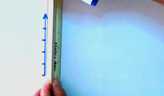
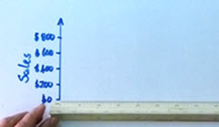
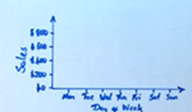
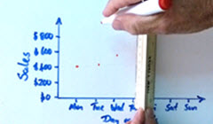
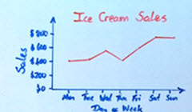

Line Graphs
Line Graph: a graph that shows information connected in some way (usually as it changes over time).
You record the temperature outside your house and get these results:
| Table: Temperature 22 Feb |
|||
| 8:00 | 10:00 | 12:00 | 14:00 |
|---|---|---|---|
| 24° | 32° | 36° | 29° |
You are interested to see how it rises and falls, so decide to make a line graph:

It makes the data come alive, right?
You can see how much it cooled down after lunch.
Making Line Graphs
You can create graphs like that using the Data Graphs (Bar, Line and Pie) page.
Or you can draw it yourself!
Example: Ice Cream Sales
| Table: Ice Cream Sales | ||||||
| Mon | Tue | Wed | Thu | Fri | Sat | Sun |
|---|---|---|---|---|---|---|
| $410 | $440 | $550 | $420 | $610 | $790 | $770 |
Let's make the vertical scale go from $0 to $800, with tick marks every $200

Draw a vertical scale with tick marks

Label the tick marks, and give the scale a label

Draw a horizontal scale with tick marks and labels

Put a dot for each data value

Connect the dots and give the graph a title
Important! Make sure to have:
- A Title
- Vertical scale with tick marks and labels
- Horizontal scale with tick marks and labels
- Data points connected by lines